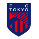

アウェイでセレッソ大阪と対戦したFC東京が完勝した。前半8分に仲川輝人が先制点を決めると、後半開始早々には長倉幹樹が追加点を記録。試合終了間際には橋本拳人がダメ押しのゴールを挙げ、3-0での勝利となった。
この結果によりFC東京は今シーズンの無失点記録をさらに伸ばすこととなり、リーグ屈指の守備力をあらためて示す形となった。一方のセレッソ大阪は、試合を通してほとんど決定機を作れず、苦しい内容での敗戦となった。
ネット上ではFC東京の圧倒的な強さと安定感に驚きの声が相次ぎ、主力の離脱が続く中でもチームとして機能している点が高く評価されていた。守護神への信頼の高さや、新システムでの采配についても多くの言及があった。
敗れたセレッソ大阪サポーターからは厳しい現状を受け止めつつも、チームへの温かい声援や、試合後の交流エピソードに心温まる反応も見られた。